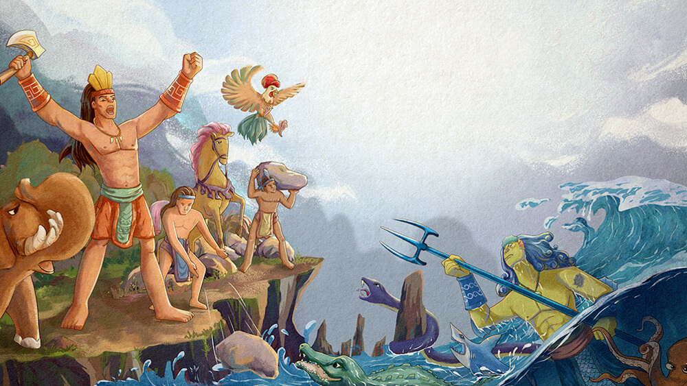
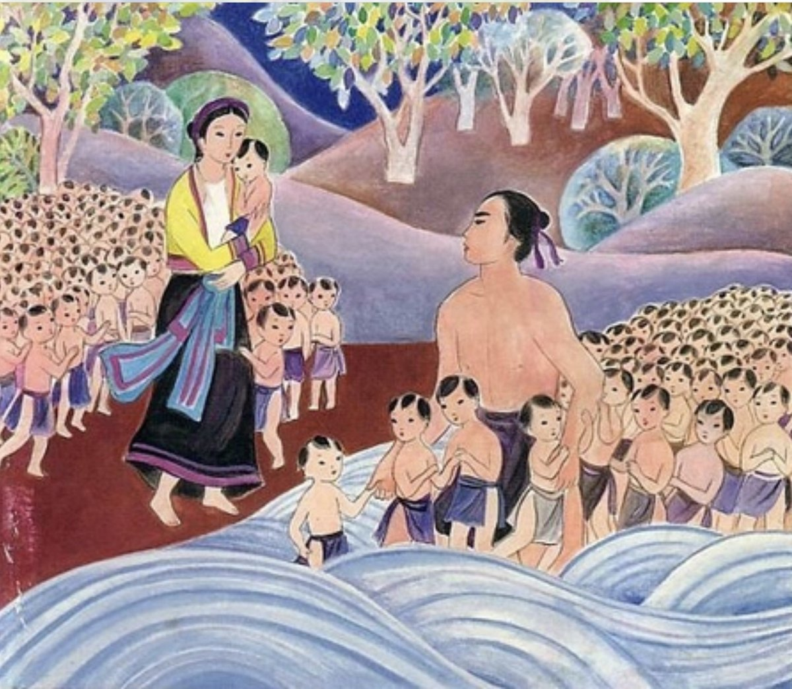

Bible · Comparative reading
Rigged Contests
Reading David and Goliath through “Sơn Tinh, Thuỷ Tinh”
Albert Le Thanh Nhan
Sources: 1 Samuel 9–18, 31 and 1 Chronicles 10 (KJV); “Sơn Tinh, Thuỷ Tinh” and “Con Rồng cháu Tiên,” Ngữ văn 6, vol. 1
Starting point
Two stories, one troubled word: underdog
1 Samuel 17
For most readers, the archetypal underdog story: a shepherd boy with a sling fells an armored giant.
Vietnamese legend
Schoolchildren learn “Sơn Tinh, Thuỷ Tinh” as an explanation of floods that also “exalts and praises” the Hùng kings’ founding of the nation.
Read side by side, the two tales unsettle the word underdog. David is the obvious physical underdog, yet the only arbiter who matters has already chosen him. Thuỷ Tinh is Sơn Tinh’s divine equal, and becomes an underdog only through the terms a king sets.
Thesis
The underdog is made by whoever sets the terms
In both narratives, the underdog is made by whoever sets the terms of the contest, and each tale reserves its harshest judgment for the king who sets or resists those terms.
Neither anointing nor ancestry protects a king who rigs the contest.
Part I · David and Goliath
A mismatch staged with care

Every human witness in the story reads the odds by size.
Part I · David and Goliath
The arbiter has already chosen

Part I · David and Goliath
Two vantages on the same contest
Schematic, not to scale: the first panel shows the odds as Saul, Israel and Goliath read them; the second shows the arrangement the reader already knows from chapter 16.
Within the story, only David reads the odds correctly, and he announces the arrangement aloud (17.47). The mismatch is staged so that David’s victory may be glorious in the name of God.
Outmatched in body and unbeatable in theology, David is an underdog only from a human vantage.
Part I · The other loser
Saul, Israel’s own giant
- 1 Sam. 9.2“higher than any of the people” from the shoulders up: the very “outward appearance” God discounts (16.7)
- 1 Sam. 9.21Once a chosen underdog himself: a Benjamite “of the smallest of the tribes of Israel”
- 1 Sam. 15.23“Because thou hast rejected the word of the LORD, he hath also rejected thee from [being] king”
- 1 Sam. 17.11Saul and all Israel “were dismayed, and greatly afraid”
- 1 Sam. 17.39The king’s armor is useless to the chosen boy: “I cannot go with these; for I have not proved them”
The tallest man in Israel stands among the frightened, and his equipment cannot be worn by the one God has chosen.
In Samuel, chosenness is a relation that can be broken, not a possession that can be kept.
Part II · Sơn Tinh, Thuỷ Tinh
Thuỷ Tinh does not look like an underdog at all
The legend insists on parity. Sơn Tinh raises hills with a wave of his hand; Thuỷ Tinh, “no less talented,” summons wind and rain.
The king affirms the parity, then dissolves it.
Part II · The terms
The bride-price (sính lễ): whoever brings it first marries Mị Nương

The animals are required in pairs: “a pair of each.”
Every single item comes from the land; nothing comes from the sea. The rule is formally neutral and substantively partial.
Part II · The race
Not impossible, only slower, and in a race slower is enough
Schematic: the bar lengths are illustrative and are not measured from the text.
Sơn Tinh arrives first. Thuỷ Tinh never lacked the gifts. A list drawn from the land need not make the sea god’s task impossible, only slower.
Part II · The floods
Oán nặng, thù sâu: a heavy grievance and a deep enmity
The narrator frames Thuỷ Tinh’s response as rage and an attempt to “seize” Mị Nương, yet also names the motive behind the yearly floods.
Oán is resentment of a wrong suffered, and the king’s terms supply one.
Caveat This reading does not make Thuỷ Tinh just: his waters drown the fields and houses of people who set no terms.
What changes In collective causality, the origin of the annual catastrophe moves from a god’s temper to a king’s decree.
Part III · The same instrument
Two fathers price a daughter to fix the outcome
| Saul (1 Sam. 17–18) | The Hùng king | |
|---|---|---|
| The prize | The king’s daughter, advertised for killing Goliath (17.25); Merab given to another man (18.19); Michal offered “that she may be a snare to him” (18.21) | Mị Nương |
| The price | “but an hundred foreskins of the Philistines” (18.25) | A bride-price drawn wholly from the land |
| The aim | “make David fall by the hand of the Philistines” (18.25) | A preference disguised as a fair race |
| Rigged against | The man God has chosen | A god he has not chosen |
| Result | He fails: David kills “two hundred men” (18.27) | He succeeds, and his success is the problem |
Both fathers treat a daughter as a stake rather than a person.
Part III · Where the cost falls
When no higher arbiter overrules, the cost falls downward
Saul
The Hùng king
Part IV · The fall of kings
Only Saul’s fall is narrated and moralized
Saul
The Hùng king
His end appears in neither textbook tale.
- “Con Rồng cháu Tiên” records a throne handed down for 18 generations under one title without change.
- “Sơn Tinh, Thuỷ Tinh” opens on the eighteenth of these kings.
- Vietnamese historical tradition makes him the last: the ruler whose Văn Lang fell to Thục Phán.
Part IV · The founding pact
He failed the pact his bloodline embodies
“I am of the dragon race of the deep waters; you are of the immortal line of the high mountains.”“Con Rồng cháu Tiên”
“Mountain folk and sea folk, whenever there is need, must help one another; do not forget the pledge.”“Con Rồng cháu Tiên”

He professes equal regard for both suitors, sets terms that favor the land, and turns the water into his kingdom’s yearly enemy. His bloodline did not fail him; he failed the pact his bloodline embodies.
Part IV · An objection
Was the king only sparing his daughter?
Objection
The founding tale itself declares land and water “hard to live together in one place for long” (“Con Rồng cháu Tiên”), so the king merely spares his daughter the separation her ancestors endured.
Reply
The founding tale answers that incompatibility with separation and mutual aid, not with a contest in which one side is quietly disqualified.
The king could have refused both suitors. Instead he disguised a preference as a fair race, and his people paid for the disguise.
Conclusion
A position assigned, not a measure of strength
Saul’s anointing does not survive his disobedience, and the line of the dragon and the immortal ends with the king who broke its pact. In both tales, underdog names a position assigned by whoever sets the terms, and severe judgment falls not only on the losing champion but also on the king who set the terms or fought them.
For discussion
- If the terms of a contest make the underdog, who sets the terms in 1 Samuel 17, and who sets them in 1 Samuel 18?
- Thuỷ Tinh has a real grievance, yet his floods fall on people who set no terms. How should a reader weigh grievance against harm?
- Is a contest “rigged by grace” still a contest? What does the phrase claim about how 1 Samuel understands divine choice?
Works cited
The Bible. Authorized King James Version, Oxford UP, 1998.
“Con Rồng cháu Tiên.” Ngữ văn 6, vol. 1. GiaiBaiTap123.com, giaibaitap123.com/sach-giao-khoa-ngu-van-6-tap-1/con-rong-chau-tien/.
“Sơn Tinh, Thuỷ Tinh.” Ngữ văn 6, vol. 1. GiaiBaiTap123.com, giaibaitap123.com/sach-giao-khoa-ngu-van-6-tap-1/son-tinh-thuy-tinh/.
Images
Caravaggio, David with the Head of Goliath, c. 1605–1610, Galleria Borghese, Rome; public domain, via Wikimedia Commons.
Samuel anoints David, Dura-Europos synagogue wall painting, mid-3rd century CE, National Museum of Damascus; via Wikimedia Commons.
Sơn Tinh and Thuỷ Tinh illustration (slide 9), from truyenxuatichcu.com; artist and licence not verified.
Âu Cơ and Lạc Long Quân illustration (slide 15), supplied by the presenter; artist and source not verified.
All diagrams were drawn for this presentation.